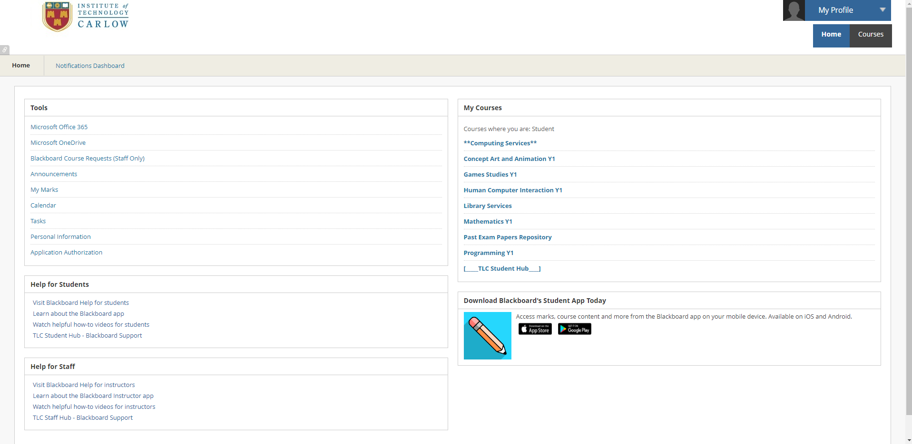

Prototypes
From the usability tests I noticed a big underuse of the profile dropdown menu.
From the tests conducted , it was almost as if the option for the dropdown did not exist at all. When the inexperienced user could not find the calender
from the course page, this was proven as they stared at the screen for 2 minutes. Apart from that aspect of the test, blackbaords simple,minimalistic design
proved to be effective as even the most sifficult task was easily completed from the home menu.
So i decided to make a small change to making the drop down menu more clear to the user and remove the "Search the Web" option as it only takes up space since
on any machine you can just open another tab.
